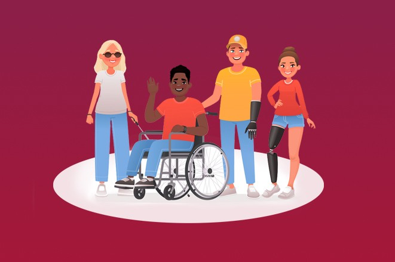

O que é Inclusão e Acessibilidade?

A acessibilidade é a capacidade de uma pessoa com deficiência ou limitação de usar,
entrar ou participar de algo, como um edifício, um serviço ou um produto. Em outras palavras, a acessibili
dade visa garantir que todos os indivíduos possam utilizar e acessar os mesmos recursos e oportunidades, in
dependentemente de suas limitações ou deficiências. Ambos os conceitos são importantes para garantir a igual
dade e a justiça social em nossa sociedade.cidadania e contribuir para o bem-estar coletivo.
Inclusão é o processo de garantir que todas as pessoas tenham igualdade de oportunidades,
acesso e participação em todos os aspectos da sociedade, independentemente de suas diferenças.
Diferença de inclusão e acessibilidade

A inclusão se refere a garantir que todas as pessoas, independentemente de suas diferenças, sejam bem-vindas, valorizadas e incluídas em
todos os aspectos da sociedade. A acessibilidade, por outro lado, se concentra em garantir que todos tenham acesso a bens, serviços e locais
físicos sem barreiras. Ambos são importantes para garantir a igualdade de oportunidades e o respeito à diversidade.